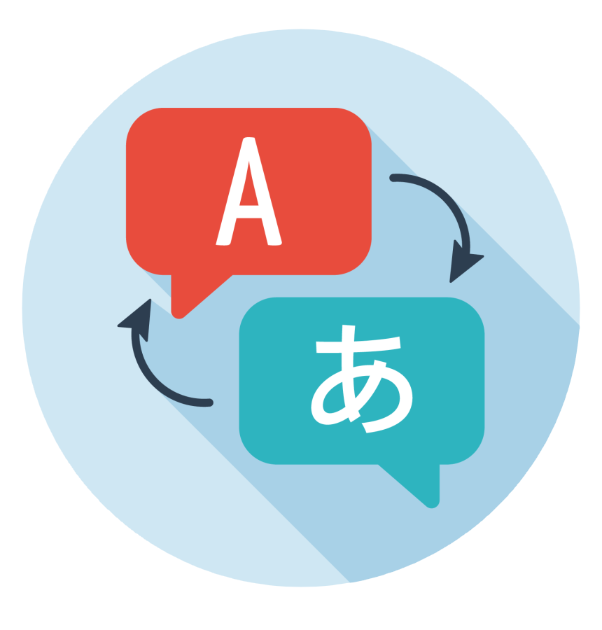

Nathan FERRER
Web Developer & IT Engineer, e-Health Specialist
Hello ! I'm Nathan, a WEB / Front-End developer and student engineer in computer science with an option in e-health.
Passionate for several years about computer science and programming, I started with WEB dev about 8 years ago. Since then, i have been able to discover other fields, such as software development and cyber security, a field in which I wish to specialize in the future.
I have developed several projects in different languages, either for myself, for knowledge or in collaboration with other developers.So don't hesitate to take a look at them!
My skills
DEVELOPMENT
HTML - 7 years
CSS3 / SASS - 7 years
JS / JQUERY - 3 years
PHP - 3 years
JAVA / JEE - 4 years
C - 3 years
SQL - 4 years
Others : WordPress Dev, 80x86 Assembler, NodeJS, Network Applications, .NET, ...
Eclipse - 5 years
NetBeans - 3 years
Visual Basic - 2 years
GitHub - 1 year
SVN - 1 year
Microsoft OFFICE - +10 years
Linux - 7 years
English - TOEIC - B2 / Speaks fluently
German - A2 - B1
Chinese - A2
Hotline / Relational - 2 years
SCRUM Project Management - 3 years
Voltaire Certification (french) - In progress
My Experiences
Capcir
Senior Technician to Engineer
September 2019 - Today
Development of modules adjacent to the company's main software, in project mode (from initiation to delivery).
Resolution of urgent, blocking or non-blocking incidents, all in a JEE development environment. Fixing bugs, implementing patches and developing evolutions within the software. Manipulation of hospital databases in production. Strong customer relations.
Skills : JEE Dev, SQL, Teamwork, Interpersonal Skills, Written & oral communication.
Ibbü
IT Consultant
August 2020 - Today
Chatting advice to visitors of commercial sites, about computer products.
Skills : Interpersonal Skills, Written & oral communication.
Silène Habitat
IT Trainee
April 2019 - June 2019
Migration of the functionalities of a software that duplicates another. Analysis and realization of the project stages, from framing to delivery. Role of Project Manager, in an Agile organization with a strong Scrum inspiration. I knew how to listen and adapt to the structure to bring full satisfaction to my client. Congratulations from the company.
Skills : Agile Project Management SCRUM, SQL, Collaborative tools.
ACDI National Website Contest
Team Leader - WEB Dev
September 2018 - March 2019
Competition for the realization of the new website of the Assembly of the Heads of IT Department. Created from scratch of a WEB site and derived functionalities, to replace the current site "iut-informatique.fr" . Following the votes of a jury of specialists, 1st technical (code) and 2nd national (code & design).
Skills : HTML, CSS3, JS, WordPress, Collaborative tools.
Project - CyberSecurity
School Project
April 2018 - June 2018
Within the framework of a tutored project, in a team of 4, we have :
- secured and encrypted the sending of emails between 2 email clients, using asymmetric cryptography.
- developped and implemented an Apache2 server, securing the connection of the client workstation by means of certification.
Skills : C, Linux, Bash, Cryptography tools, Collaborative tools.
Computer Engineering School
e-Health Specialist
ISIS, INSA group, Castres (81)
Work-study program at the ISIS engineering school (Computer Science & Information Systems for Health), part of the INSA group.
Double expertise provided: a first digital expertise and a second one in health, gratified by a state-recognized engineering degree.
IUT Informatique
IUT de Rodez, Rodez (12)
IUT of Rodez, computer science department.
Intensive and demanding training, alternating general courses (Mathematics, Economics/Management, Languages, ...), specialized courses (Algorithmics, Programming, Software Engineering, Systems and Networks, ...) and professional courses (Internship, Professional Project, Tutored Projects, ...).
Private General High School
Lycée Notre Dame d'Esperance, Saint-Nazaire (44)
General High School, Scientific series, speciality Physics-Chemistry.
Scientific Baccalaureate, with honors.
Skills
Experiences
School
Portfolio